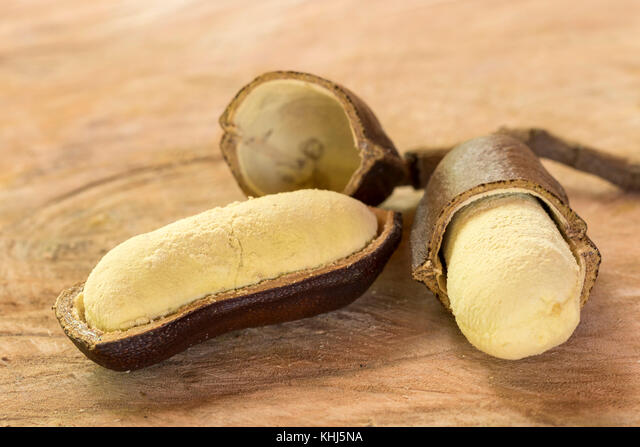
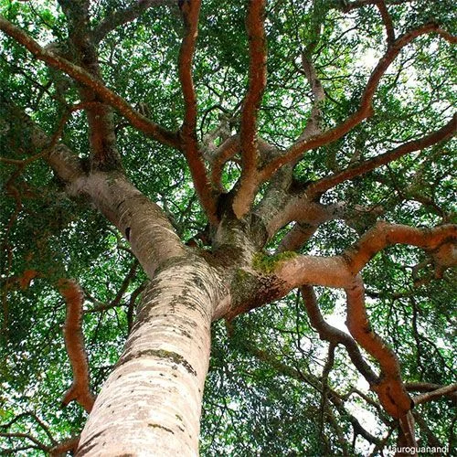
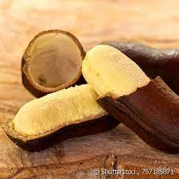

Jatobá
O jatobá-verdadeiro, jatobazeiro ou apenas jatobá, (nome científico: Hymenaea courbaril) é uma árvore da família das fabáceas. É a espécie arbórea dominante na floresta estacional semidecidual submontana. A espécie pode alcançar 40 metros de altura e 2 metros de diâmetro, embora uma árvore tenha atingido 95 metros na Amazônia. As folhas são compostas por 2 folíolos, semidecíduas, coriáceas, com seis a 14 cm de comprimento e 3 a 5 cm de largura. A floração ocorre na época de seca do ano e a frutificação ocorre cerca de 4 meses depois. Embora a espécie seja considerada ameaçada de extinção devido à superexploração, e como árvore rara, com apenas uma árvore por hectare pelo Instituto de Pesquisa e Estudos Florestais (IPEF), foi avaliada como pouco preocupante na Lista Vermelha da União Internacional para a Conservação da Natureza e dos Recursos Naturais versão 3.1, pois tem uma larga distribuição geográfica, por ser considerada comum, e por ocorrer em áreas protegidas, e por sua população não estar ameaçada ou em declínio.
É considerada sagrada por povos indígenas, que serviam os frutos antes de rituais de meditação, pois acreditavam que o fruto trazia equilíbrio mental, e pesquisas recentes demonstraram que realmente, o fruto pode trazer benefícios à organização mental, o fruto é rico em ferro, e é indicado a quem sofre de anemia . A madeira do jatobá é uma das mais valiosas entre todas as espécies do mundo. Como espécie mais amplamente distribuída do gênero, o jatobá pode ser encontrado desde o sul do México e Antilhas até grande parte da América do Sul, no Brasil é encontrado desde o norte a sudeste; na Amazônia, na Caatinga, no Cerrado, na Mata Atlântica e no Pantanal, e está sendo introduzida na China, na Costa do Marfim, na Indonésia, no Quênia, no Madagascar, na Maurícia, em Singapura, no Sri Lanka, em Taiwan e em Uganda. É encontrada em altitudes superiores a 700 metros acima do nível do mar.
Das 6 variedades da espécie, 3 são endêmicas do Brasil, a variedade Hymenaea courbaril var. stilbocarpa está em risco de extinção, foi uma das espécies plantadas pelo Instituto Florestal de São Paulo, para conservação genética ex situ.
Jatobá: uma árvore de muitos benefícios
Pode elevar-se do solo até 40 metros! Uma gigante cujo crescimento lento faz com que a madeira de seu tronco e ramos seja de uma qualidade muito superior à das demais árvores. Comumente conhecida pelo nome fruto – Jatobá (Hymenaea courbaril) em tupi, significa “árvore de frutos duros”. O indígena brasileiro conhece seus múltiplos benefícios medicinais e a considera sagrada, utilizando-a em seus rituais xamânicos. Também é conhecida como: jutaí, jutaí-açu, jutaí-bravo, jutaí-grande, jutaí-peba, jutaí-uba, jutaí-uva, jataíba, jataúba.
Ocorre em partes da América do Sul e Central, do México ao Paraguai. No Brasil é fácil encontrá-la em todas as regiões do país, principalmente nos domínios fitogeográficos da Amazônia, Caatinga, Cerrado, Mata Atlântica e Pantanal, em áreas antrópicas, de cerrado, em floresta ciliar ou galera, floresta de terra firme, floresta ombrófila[iii] e na restinga. É mais frequente em solos pobres e argilosos. É uma árvore que comumente compõe a floresta secundária tardia e de clímax na dinâmica sucessional.
O jatobazeiro tem o tronco reto, cilíndrico e de casca lisa, que é grossa e vermelho-escura. Suas folhas são lanceoladas e pontiagudas, com nervura principal bem aparente e as suas delicadas flores têm cores que variam de brancas a creme-alaranjado. O fruto é uma vagem lenhosa grande e robusta; verde quando imaturo, marrom-forte quando maduro e preto quando passado.
É de fácil colheita pois as grandes vagens marrons se projetam espontaneamente ao solo e, na floresta, serve de alimento a muitos animais que depois dispersam as sementes por vastas áreas dando continuidade ao ciclo da vida. A polpa tem um aspecto de farinha, é comestível e adocicada, de cor amarelo-claro. As sementes são grandes, ovais e de cor marrom-avermelhada.
O tronco que pode chegar a um metro de diâmetro e fornece uma madeira resistente, de consistência sólida e por isso mesmo de grande longevidade.
O jatobazeiro é uma árvore que não apodrece facilmente quando morre devido à sua natureza antifúngica, por isso é uma matéria prima bastante apreciada para a construção de alicerces, portas, tábuas e objetos de arte, daí a grande procura e, na mesma proporção, o grande risco de extinção. É considerada uma das madeiras mais valiosas do mundo.
O fruto
Já o fruto maduro (ocorre entre os meses de julho a setembro) é talvez seu mais importante atributo. De odor forte e marcante, possui casca dura e em média carrega duas sementes por fruto. Indicada para tratamento de anemia pelo alto teor de ferro. É ainda rica em fósforo, magnésio e vitamina C. Fornece mais potássio que a banana e mais cálcio que leite e é, portanto, considerado um energético natural O chá medicinal é benéfico no tratamento de diversas afecções: cicatrização de feridas em geral (tanto cutânea quanto interna), asma e outras doenças respiratórias, blenorragia, cistite, cólicas, verminose, prisão de ventre, coqueluche, disenteria, má digestão, fraqueza, problemas de próstata, tosse e laringite. Portanto, as propriedades do jatobá, sempre utilizado como coadjuvante, são: ação adstringente, antibacteriana, antiespasmódica, antifúngica, anti-inflamatória, antioxidante, balsâmica, descongestionante, diurética, estimulante, expectorante, fortificante, hepatoprotetora, laxante, tônica e vermífuga. Até a seiva do jatobá possui propriedades medicinais. Obtida através da laceração ou perfuração do tronco, proporciona tratamento para os convalescentes, anêmicos e aos debilitados por afecções pulmonares, pois colabora para o fortalecimento do sistema imunológico.